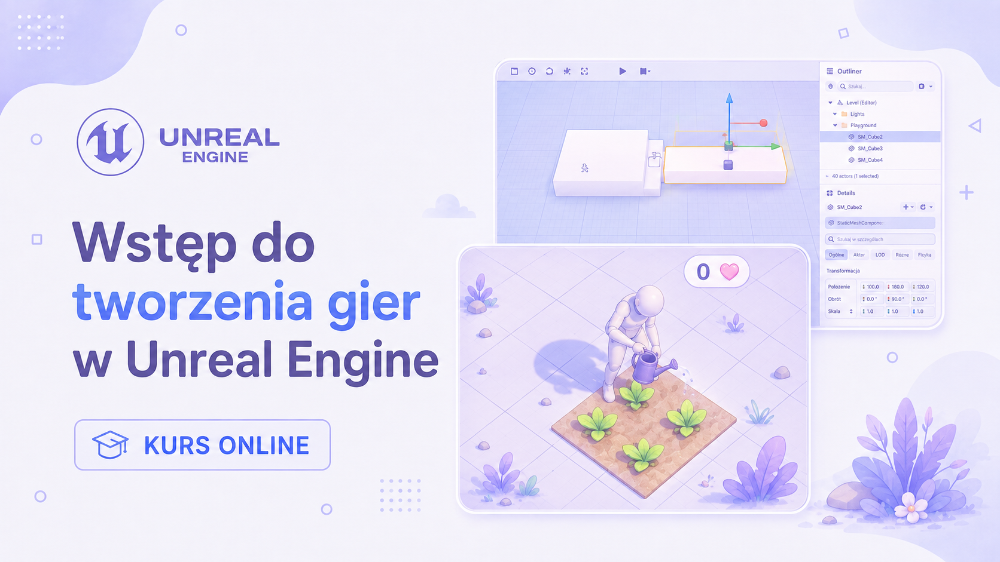

Kurs KTG · Szkoła w Chmurze
Wstęp do tworzenia
gier w Unreal Engine

Przekrojowy kurs tworzenia gier i aplikacji interaktywnych — od pomysłu i prototypu, przez programowanie i level design, aż po UX, animacje, narrację i AI.
20godzin zajęć
20spotkań
0zł — kurs darmowy
O kursie
Na prośbę moich dzieci przygotowałem dla nich i innych chmurkowiczów przekrojowy kurs tworzenia gier i aplikacji interaktywnych z wykorzystaniem Unreal Engine.
Na przykładzie tworzenia własnej gry przyjrzymy się różnym aspektom pracy nad oprogramowaniem: od pomysłu i prototypu, przez programowanie i projektowanie poziomów, aż po UX, interfejs, animacje czy zarządzanie projektem.
Najwięcej czasu poświęcimy programowaniu, UX, level designowi i organizacji pracy nad projektem. Zahaczymy jednak również o tematy pokrewne: animację, narrację, psychologię gracza, matematykę wykorzystywaną w grach oraz AI.
Porozmawiamy też z gośćmi zawodowo pracującymi z Unreal Engine, którzy pokażą nam inne strony tej branży — m.in. tworzenie środowisk, materiałów i efektów specjalnych oraz wykorzystanie Unreal Engine w produkcji filmowej.
Informacje organizacyjne
20 godzin
łącznego czasu zajęć w ramach kursu.
20 spotkań
teoretycznych i praktycznych, opisanych w programie kursu.
0 zł
kurs w pełni darmowy dla uczniów Szkoły w Chmurze.
Rodzaje spotkań
Spotkania są podzielone na dwa rodzaje, czasem łączone w ramach jednych zajęć:
T zajęcia teoretyczne — rozmawiamy o konkretnych zagadnieniach
P zajęcia praktyczne — wspólnie tworzymy własną grę w Unreal Engine
Kontakt i materiały
Link do zajęć
Pojawi się w komentarzu do wydarzenia 15 minut przed rozpoczęciem spotkania.
Pytania po zajęciach
Zadawajcie je w komentarzach pod wydarzeniem w aplikacji SwCh lub na naszej grupie Discord (link wkrótce).
Dwa słowa o prowadzącym
DK
Nazywam się Damian Kolenda. Od kilkunastu lat zawodowo programuję, projektuję aplikacje i zarządzam projektami IT. Pracowałem przy różnych typach oprogramowania — od aplikacji internetowych i mobilnych po aplikacje desktopowe i rozszerzenia przeglądarek. Obecnie zajmuję się głównie tworzeniem aplikacji związanych z bezpieczeństwem.
Szczegółowy program kursu
20 spotkań — kliknij, aby rozwinąć zagadnienia poruszane na każdych zajęciach.
1 Wstęp do tworzenia gier 04.09 15:00
- Jak powstają gry?
- Kto pracuje przy tworzeniu gier i czym zajmują się poszczególne osoby?
- Jakich narzędzi używa się przy produkcji gier?
- Wprowadzenie do Unreal Engine
- Instalacja i pierwsze kroki
Prezentacja
Materiały
2 Unreal Engine — pierwsze kroki
- Rozmieszczanie elementów na scenie
- Podstawy tworzenia logiki: zdarzenia i zmienne
- Przykłady praktyczne: drabina i portal
3 Od pomysłu do prototypu
- Jak wygląda proces planowania i analizy?
- Dla kogo tworzymy grę?
- Podstawowa pętla rozgrywki — game loop
- Prototypowanie i blockout
4 Unreal Engine — animacje
- Poruszanie aktorów — na przykładzie drzwi
- Tworzenie prostych cutscenek
- Animacje akcji gracza
5 Psychologia gracza
- Co motywuje gracza? Teoria autodeterminacji
- Typologia graczy Bartle'a
- Stan flow
- Schematy i błędy poznawcze
- Warunkowanie instrumentalne
- Gamifikacja i wykorzystywanie mechanizmów znanych z gier
- Dark patterns w grach
- Zaburzenia związane z graniem
6 Unreal Engine — animacje, cz. 2
- MetaHuman — tworzymy realistycznego bohatera
- Tworzenie własnych animacji
- Przykłady praktyczne: podlewanie grządki i użyźnianie gleby
7 Fabuła i narracja w grach
- Pacing — tempo opowiadania historii
- Struktura trzech aktów
- Monomit, czyli podróż bohatera
- Teoria równowagi Tzvetana Todorova
- Narracja emergentna
- Narzędzia pisarza: konflikt, foreshadowing, fałszywy trop, retrospekcja i inne
- Metody szybkiego tworzenia historii: graf świata, historia zbudowana wokół przedmiotu, siedem złotych pytań kryminalistycznych
8 Unreal Engine — porządkowanie i optymalizacja projektu
- Debugowanie
- Analiza zależności
- Podstawy zasad SOLID
- Funkcje
- Komunikacja między aktorami: Interface, Event Dispatcher, Subsystem
9 Wprowadzenie do level designu
- Psychologia gracza w projektowaniu poziomów
- Opowiadanie historii za pomocą otoczenia
- Ścieżki gracza i subtelne kierowanie jego uwagą
- Typowe błędy projektowe
- Blockout
10 Unreal Engine — mechanika, cz. 3
- Zmienne publiczne i listy
- Event Dispatchers
- Przykład praktyczny: tworzymy zagadkę
11 Level design — projektowanie w 2D
- Dlaczego research jest ważny?
- Od pomysłu do planu poziomu
- Projektowanie levelu w 2D
- Rysujemy własne poziomy na kartkach
12 UX i UI w grach
- Zasady projektowania dobrego interfejsu
- Najczęstsze błędy
- Interfejs diegetyczny
- Otoczenie jako element interfejsu
- Czym jest HUD?
13 UI w praktyce
- Czym jest Widget?
- Podstawy tworzenia UI w Unreal Engine
- Przykłady praktyczne: HUD i ekwipunek
14 Matematyka w grach
- Punkty i wektory
- Okręgi, koła i trójkąty
- Sinus i cosinus — gdzie naprawdę przydają się w grach?
- Kilka bardzo przydatnych wzorów i przykładów
15 Unreal Engine — mechanika, cz. 4
- Mapowanie sterowania
- Obsługa kontrolera
- Wykrywanie przedmiotów
- Interakcja z obiektami w świecie gry
16 Gość: Lead Virtual Production w Warner Bros. Discovery
- Jak tworzy się filmy z wykorzystaniem Unreal Engine?
- Virtual Production od kuchni
- Materiały i efekty specjalne
17 Level design — projektowanie w 3D
- Przenosimy projekt 2D do Unreal Engine
- Budujemy blockout poziomu
- Testujemy ścieżki gracza i czytelność przestrzeni
18 AI aktorów
- Do czego potrzebujemy AI w grach?
- Podejmowanie decyzji przez postacie
- Podstawy zachowania NPC
- Pierwsze własne AI w Unreal Engine
19 AI aktorów, cz. 2 / spotkanie z gościem
- Rozwijamy zachowania NPC
- Łączymy AI z mechanikami naszej gry
- Temat spotkania z gościem zostanie podany po jego potwierdzeniu
20 C++ i AI jako pomoc w programowaniu
- Po co Unreal Engine wykorzystuje C++?
- Blueprinty a C++
- Jak wygląda kod w projekcie Unreal Engine?
- Czym jest „vibe coding”?
- Jak korzystać z AI jako wsparcia podczas programowania — i gdzie trzeba na nie uważać?
Gotowi na start?
Zajęcia będą odbywać się raz w tygodniu i zaczynają się 04.09 15:00.